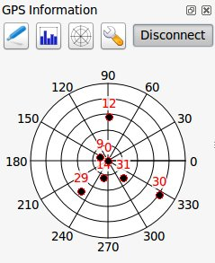
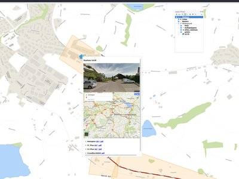
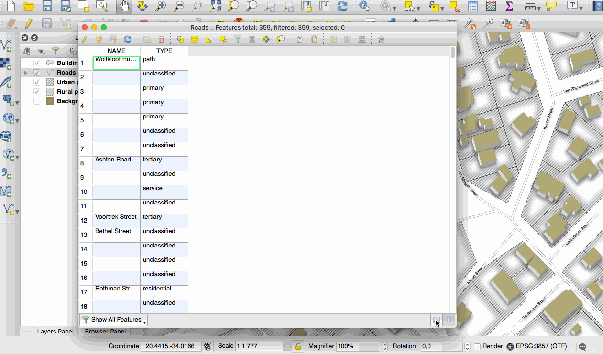
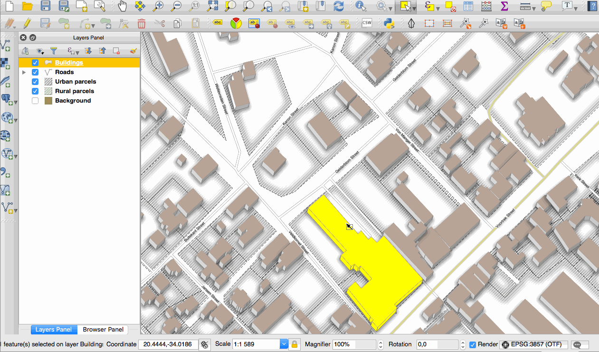
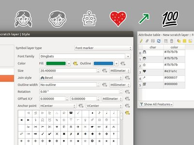
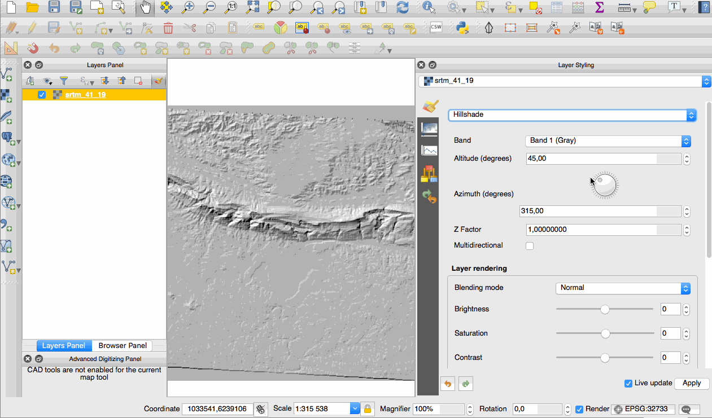
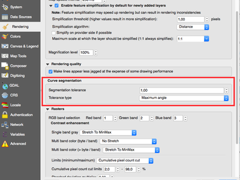
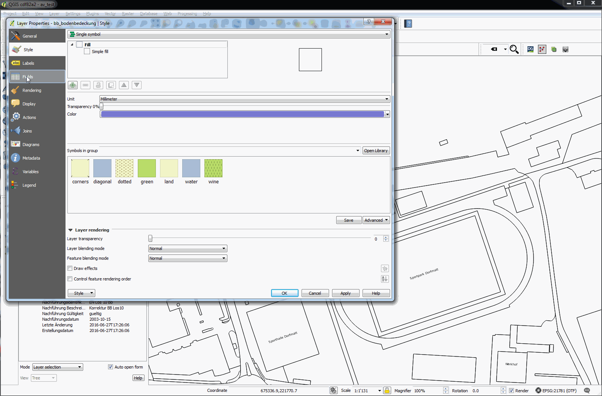

Modifications apportées par QGIS 2.16¶

Voici la liste des modifications pour la prochaine version de QGIS - version 2.16.0 “Nødebo”. Le département “Géosciences et Gestion des Ressources Naturelles” du collège “Forêts et Paysages” à Nødebo a accueilli la première conférence internationale QGIS et rencontre de développeurs en mai 2015.
Ceci n’est pas une Version Long Terme
Cette version n’est pas désignée comme Version Long Terme (LTR). Les utilisateurs qui souhaitent avoir une version de QGIS qui ne change pas et qui bénéficie de correction d’erreurs pendant au moins 1 an sont invités à utiliser plutôt la version 2.14 (qui est à présent notre version LTR officielle avec la sortie de QGIS 2.16)
Nouvelles Fonctionnalités dans QGIS 2.16 “Nødebo”
Si vous effectuez une mise à jour à partir de QGIS 2.14, vous trouverez de nombreuses nouvelles fonctionnalités dans cette version. Nous vous encourageons à parcourir les journaux de modifications des versions antérieures car cette version QGIS 2.16 inclut toutes les fonctionnalités publiées dans ces versions.
À chaque fois que de nouvelles fonctionnalités sont ajoutées au logiciel, elles introduisent potentiellement de nouveaux bugs. Donc, si vous avez des problèmes avec cette version, reportez-les en utilisant le système de suivi de bugs de QGIS.

Prononciation de Nødebo…
Merci
We would like to thank the developers, documenters, testers and all the many folks out there who volunteer their time and effort (or fund people to do so). From the QGIS community we hope you enjoy this release! If you wish to donate time, money or otherwise get involved in making QGIS more awesome, please wander along to qgis.org and lend a hand!
QGIS is supported by donors and sponsors. A current list of donors who have made financial contributions large and small to the project can be seen on our donors list. If you would like to become an official project sponsor, please visit our sponsorship page for details. Sponsoring QGIS helps us to fund our six monthly developer meetings, maintain project infrastructure and fund bug fixing efforts. A complete list of current sponsors is provided below - our very great thank you to all of our sponsors!
QGIS est un logiciel libre et vous n’avez aucune obligation de payer quoi que ce soit pour l’utiliser. En fait, nous souhaitons encourager les gens à l’utiliser le plus possible, sans s’intéresser à leur état financier ou à leur statut social. Nous croyons que fournir aux gens des outils décisionnels spatiaux permettra d’améliorer la société humaine. Si vous êtes en capacité d’aider QGIS, vous pouvez  .
.
- Sponsors de QGIS 2.16.0
- Général
- Fonctionnalité : Copier les entités au format GeoJSON
- Fonctionnalité : stocker des signets spatiaux dans les fichiers de projet.
- Fonctionnalité : visualisation des messages GNSS GNRMC
- Fonctionnalité : Coller des entités GeoJSON directement dans QGIS
- Fonctionnalité : amélioration des infobulles de carte
- Fonctionnalité : les types de fichiers de QGIS disposent à présent d’icônes MIME dédiées
- Interface utilisateur
- Fonctionnalité : Loupe de canevas de carte
- Fonctionnalité : Amélioration du zoom
- Fonctionnalité : Éditeur interactif de gradient remodelé
- Fonctionnalité : Choix de la vue par défaut pour la table attributaire
- Fonctionnalité: Améliorations des calendriers contextuels
- Fonctionnalité: Amélioration des sélecteurs de couleur
- Fonctionnalité : Copie du contenu d’une cellule de la table attributaire
- Fonctionnalité: Amélioration du support pour HiDPI
- Fonctionnalité : Amélioration de l’outil de sélection sur la carte
- Actualisation de la Documentation
- Symbologie
- Fonctionnalité: Couche de symboles de flèche
- Fonctionnalité: Nouveau type de couche de symbole « Symbole de remplissage »
- Fonctionnalité: Nouveaux symboles dédiés à l’accessibilité et la mauvaise vision
- Fonctionnalité: Nouveaux symboles de marqueurs simples
- Fonctionnalité : le rendu « Aucun Symbole »
- Fonctionnalité: Amélioration du contrôle du rendu du remplissage de centroïde
- Fonctionnalité: Paramètre de bordure pour les symboles de police
- Fonctionnalité: Contrôle de la jointure de bordure pour les symboles simples, d’ellipse et de police
- Fonctionnalité: Nouvel outil de carte pour paramétrer interactivement le décalage d’un symbole ponctuel
- Fonctionnalité: Le panneau Style
- Étiquetage
- Diagrammes
- Rendu
- Numérisation
- Gestion des Données
- Fonctionnalité: Nouvelles options de configuration pour la table attributaire
- Fonctionnalité: Gestion des colonnes dans les formulaires de saisie
- Fonctionnalité: Contrôle des attributs à exporter lors de l’enregistrement d’une couche vecteur
- Fonctionnalité: Vue formulaire: la colonne sur le côté est maintenant triable
- Fonctionnalité: Contrôle de formulaire de référence de la relation: raccourci pour l’ajout de nouvelles valeurs
- Fonctionnalité : Améliorations de l’export DXF
- Fonctionnalité: Contrôles de formulaire de premier niveau dans la conception par glisser/déposer
- Fonctionnalité: Filtre et sélection basées sur le formulaire
- Fonctionnalité: Création de couches GeoPackage
- Fonctionnalité: Contraintes dans les contrôles de formulaire
- Fonctionnalité: Mise à jour d’attributs de plusieurs entités simultanément
- Légende des Couches
- Composeur de Cartes
- Fonctionnalité: Nouveaux outils de dessin de polygones et de polylignes
- Fonctionnalité: Liens relatifs dans les étiquettes du composeur
- Fonctionnalité: Incorporer les entités d’atlas dans le source HTML du composeur au format GeoJSON
- Fonctionnalité: Gestion des SVG paramétrés pour les images SVG du composeur
- Fonctionnalité: Utilisation plus simple du HTML dans les étiquettes
- Fonctionnalité: Sorties géoréférencées du composeur (ex: PDF)
- Fonctionnalité: Les cartes de composeur se mettent automatiquement à jour en fonction des réglages
- Outils d’Analyse
- Fonctionnalité: Paramètres nommés dans les expressions
- Fonctionnalité : Ajout de nouvelles unités de distance
- Fonctionnalité : Modifications dans les expressions
- Fonctionnalité: Statistiques pour les champs chaînes de caractères et dates
- Fonctionnalité: Affichage du rayon de point de courbure dans les outils d’information
- Fonctionnalité: Agrégats pour les expressions
- Fonctionnalité: l’extension fTool a été remplacée par les géotraitements Processing
- Traitement
- Fonctionnalité: Renseigner des emplacements de points en cliquant dans le canevas de carte
- Fonctionnalité: Gestion des expressions et des variables
- Fonctionnalité: Algorithmes pré-configurés
- Fonctionnalité: Créer une extension avec des algorithmes basés sur des scripts depuis la boîte à outils.
- Fonctionnalité: Utilisation du gestionnaire d’authentification pour les algorithmes utilisant des données PostGIS
- Fonctionnalité: Gestion de l’écriture dans des tables sans géométrie
- Fonctionnalité: Ajout de nouveaux algorithmes GRASS au menu Traitement
- Fournisseurs de données
- Fonctionnalité: Les jeux de données OGR sont ouverts en mode lecture seule par défaut
- Fonctionnalité: Amélioration de la prise en compte des champs de type DOMAIN dans PostgreSQL
- Fonctionnalité: Configuration du mode lecture seule des couches vecteurs dans le projet
- Fonctionnalité: Gestion des bases de données DB2
- Fonctionnalité: Rafraîchissement des vues matérialisées PostgreSQL dans DB Manager
- Fonctionnalité: Affichage de l’attribut OGR FID
- Fonctionnalité: Services ArcGIS REST Map et Feature
- Fonctionnalité: Enregistrement des styles dans les bases de données MS SQL et Oracle
- Fonctionnalité: Renommer les champs dans les couches
- Fonctionnalité: Gestion basique du gestionnaire Oracle Workspace
- Fonctionnalité: Améliorations massives du fournisseur WFS
- Fonctionnalité: Génération des valeurs par défaut à la volée sur les couches PostgreSQL
- QGIS Server
- Extensions
- Programmation
- Corrections importantes
Sponsors de QGIS 2.16.0¶
Chaque année, nous recevons aussi le soutien de diverses organisations qui apprécient le travail que nous faisons et souhaiteraient faciliter l’effort de développement soutenu du projet. Ces sponsors sont listés ci-dessous avec nos remerciements !
  QGIS Usergroup Switzerland, Suisse (06.2016-06.2017) QGIS Usergroup Switzerland, Suisse (06.2016-06.2017) |
 State of Vorarlberg, Autriche (11.2011-06.2017) State of Vorarlberg, Autriche (11.2011-06.2017) |
 Office of Public Works, Irlande, Irlande (12.2014-12.2016) Office of Public Works, Irlande, Irlande (12.2014-12.2016) |
 GAIA mbh, Allemagne (06.2013-11.2016) GAIA mbh, Allemagne (06.2013-11.2016) |
 Sourcepole AG, Suisse (10.2014-10.2016) Sourcepole AG, Suisse (10.2014-10.2016) |
www.terrelogiche.com, Italie (06.2015-06.2017) |
QGIS-PT (Portuguese QGIS user group), Portugal (06.2016-06.2017) |
NCC, Suède (05.2016-05.2017) |
SOLTIG (Soluciones en Tecnologías de Información Geográfica), Costa Rica (06.2016-06.2017) |
Gaia3D, Inc., Corée du Sud (05.2015-05.2017) |
GEPOL, Pologne (04.2016-04.2017) |
Royal Borough of Windsor and Maidenhead, Royaume-Uni (04.2015-04.2017) |
GFI - Gesellschaft für Informationstechnologie mbH, Allemagne (04.2015-04.2017) |
Teaching Jobs with Footprints, Canada (04.2016-04-2017) |
FORNAT AG, Suisse (04.2014-04.2017) |
National Parks UK, Royaume-Uni (03.2016-03-2017) |
KBB Underground Technologies, Allemagne (03.2014-03.2017) |
BGEO OPEN GIS, SL, Espagne (03.2016-03-2017) |
Ager Technology, Espagne (03.2014-03.2017) |
Asociación Geoinnova, Espagne (03.2016-03-2017) |
Gis3W, Italie (01.2014-01.2017) |
GIS-Support, Pologne (02.2015-03-2017) |
www.molitec.it, Italie (01.2014-03.2017) |
Chartwell Consultants Ltd., Canada (03.2015-03.2017) |
Trage Wegen vzw, Belgique (03.2015-03.2017) |
GKG Kassel (Dr.-Ing. Claas Leiner), Allemagne (03.2014-03.2017) |
CawdorForestry Resource Management, Ecosse (02.2016-02.2017) |
ChameleonJohn, USA (02.2016-02.2017) |
2D3D.GIS, France (12.2015-12.2016) |
Dr. Kerth + Lampe Geo-Infometric GmbH, Allemagne (12.2015-12.2016) |
MappingGIS, Espagne (11.2015-11.2016) |
HostingFacts.com, Estonie (12.2015-12.2016) |
Urbsol, Australie (11.2014-11.2016) |
Lutra Consulting, Royaume-Uni (10.2015-10.2016) |
WhereGroup GmbH & Co. KG, Germany (08.2015-08.2016) |
Nicholas Pearson Associates, UK (07.2015-07.2016) |
QGIS Polska, Pologne (07.2015-07.2016) |


{kind=link}
{kind=link}
{kind=link}
Général¶
Fonctionnalité : Copier les entités au format GeoJSON¶
La configuration précédente incluant le WKT lors de la copie des entités a été remplacée par la possibilité de choisir entre « Texte simple, géométrie WKT » et une nouvelle option « GeoJSON ». Lorsque l’on choisit cette dernière, copier des entités dans QGIS placera une représentation textuelle GeoJSON dans le presse papier pour la coller facilement dans d’autres application ou code Javascript. Cette configuration se trouve dans Préférences --> Options --> Sources de données --> Copier les entités comme.

Cette fonctionnalité a été développée par Nyall Dawson (North Road)
Fonctionnalité : stocker des signets spatiaux dans les fichiers de projet.¶
Si vous créez un signet spatial, vous pouvez choisir de stocker le signet dans votre fichier de projet actif. Parcourez le panneau des signets pour trouver la case à cocher qui permet cette possibilité.

Cette fonctionnalité a été développée par Stéphane Brunner
Fonctionnalité : visualisation des messages GNSS GNRMC¶
QGIS peut à présent gérer les données du satellite GLONASS (lignes $GN*) pour obtenir une précision accrue des récepteurs GPS/GNSS.

Cette fonctionnalité a été développée par Ondřej Fibich
Fonctionnalité : Coller des entités GeoJSON directement dans QGIS¶
Le presse papier de QGIS peut à présent analyser différents type de format texte, dont le format natif pour les collections d’entités GeoJSON. Celà permet de coller et coller directement des chaînes de caractères GeoJSON dans QGIS afin de les convertir automatiquement en entités et géométries QGIS.

Cette fonctionnalité a été développée par Nyall Dawson (North Road)
Fonctionnalité : amélioration des infobulles de carte¶
- Visibilité des infobulles de carte conservée à travers les sessions
- Les infobulles de cartes affichent à présent du contenu HTML, des vidéo et des liens internet

Cette fonctionnalité a été financée par OPENGIS.ch GmbH
Cette fonctionnalité a été développée par Marco Bernasocchi (OpenGIS.ch)
Fonctionnalité : les types de fichiers de QGIS disposent à présent d’icônes MIME dédiées¶
Il est à présent facile de reconnaître et différencier les différents types de fichiers QGIS dans les différents systèmes de fichiers. Il y a à présent des icônes MIME pour les types de fichiers suivants :
- *.qgs - fichier de projet QGIS
- *.qml - fichier d’attributs de couche
- *.qlr - fichier de définition de couche
- *.qpt - fichier modèle de composeur

Cette fonctionnalité a été développée par Alexandre Neto
Interface utilisateur¶
Fonctionnalité : Loupe de canevas de carte¶
Une loupe a été ajoutée à QGIS, et permet d’agrandir la carte sans changer d’échelle, ce qui permet de positionner plus facilement les étiquettes et symboles. De plus, une valeur par défaut peut être inscrite dans les paramètres de configuration, ce qui est très utile pour les écrans à grande résolution !

Cette fonctionnalité a été financée par le projet QWAT
Cette fonctionnalité a été développée par Paul Blottière (Oslandia)
Fonctionnalité : Amélioration du zoom¶
QGIS 2.16 offre de nouvelles façons de zoomer et dézoomer dans le canevas de carte.
- Presser
Ctrltout en utilisant la roulette de la souris vous permettra de zoomer et dé-zoomer plus finement. Ce comportement synchronise le canevas avec le composeur. Ctrl++ouCtrl+-permet de zoomer ou dé-zoomer directement dans la carte- Lorsque certains outils de carte sont activés, vous pouvez faire un zoom de type web en pressant
Shiftet en glissant un rectangle sur une région de la carte pour zoomer cette zone. C’est valable pour les outils de carte qui ne sont pas des outils de sélection (puisqu’ils utilisent Shift pour ajouter à la sélection) et les outils d’édition.

Cette fonctionnalité a été développée par Nyall Dawson (North Road)
Fonctionnalité : Éditeur interactif de gradient remodelé¶
L’éditeur de rampe de gradient a été remodelé avec des contrôles interactifs pour une manipulation aisée des gradients. Maintenant, la boîte de dialogue a aussi un graphe interactif pour modifier les arrêts de gradient avec des valeurs de couleurs TSV ou RVB. Les nouvelles fonctionnalités de l’éditeur :
- faire glisser pour définir l’arrêt de couleur
- Double-cliquer pour ajouter un nouvel arrêt
- La touche Délétion efface l’arrêt sélectionné
- Les touches fléchées déplacent l’arrêt sélectionné, et en pressant la touche Shift en combinaison avec les touches fléchées le déplacement sera plus important
- Glisser et coller une couleur sur le widget pour ajouter un nouvel arrêt

Cette fonctionnalité a été développée par Nyall Dawson (North Road)
Fonctionnalité : Choix de la vue par défaut pour la table attributaire¶
Dans les versions précédentes de QGIS, la table d’attributs s’affichait toujours de la même manière à l’ouverture (vue tabulaire). Maintenant vous avez le choix d’afficher par défaut la vue tabulaire, la vue formulaire ou se souvenir de la dernière vue utilisée.

Cette fonctionnalité a été développée par Nyall Dawson (North Road)
Fonctionnalité: Améliorations des calendriers contextuels¶
La date d’aujourd’hui est maintenant mise en valeur dans les widgets des calendriers contextuels, rendant plus facile la sélection d’une date à partir du jour courant.

Cette fonctionnalité a été développée par Nyall Dawson (North Road)
Fonctionnalité: Amélioration des sélecteurs de couleur¶
Les menus contextuels de couleur affichent maintenant une roue chromatique permettant un ajustement très rapide des couleurs.

Cette fonctionnalité a été développée par Nathan Woodrow
Fonctionnalité : Copie du contenu d’une cellule de la table attributaire¶
Une nouvelle entrée du menu contextuel propose de Copier le contenu de la cellule lorsque l’on fait un clic-droit sur une cellule de la table d’attributs. Quand cette option est choisie, le contenu de la cellule est copiée dans le presse-papier, quel que le soit le type de donnée.

Cette fonctionnalité a été développée par Paul Blottière (Oslandia)
Fonctionnalité: Amélioration du support pour HiDPI¶
Les utilisateurs d’écrans HiPDI noteront une amélioration de l’interface utilisateur car des efforts ont été faits pour mettre à jour les icônes au format SVG. Depuis QGIS 2.16 toutes les barres d’outils sont compatibles avec HiDPI.

Cette fonctionnalité a été développée par Mathieu Pellerin
Fonctionnalité : Amélioration de l’outil de sélection sur la carte¶
Le comportement des outils de sélection sur une carte a été amélioré grâce aux changements suivants :
Pour cliquer-et-glisser les sélections :
- presser
Shift= ajouter à la sélection - presser
Ctrl= retirer de la sélection - presser
Ctrl+Shift= intersection avec la sélection courante - presser
Alt(peut être utilisé en combinaison avecShift/Ctrl) = change du mode « intersection » à celui d“« inclusion totale »
Pour les sélections avec un seul clic :
- presser
ShiftouCtrl= bascule la sélection d’une entité (c.-à-d. soit ajoute à la sélection courante soit retire de la sélection courante)
Ces modifications permettent d’aligner le comportement de ces outils sur celui rencontré dans d’autres applications et également avec le composeur.

Cette fonctionnalité a été développée par Nyall Dawson (North Road)
Actualisation de la Documentation¶
Fonctionnalité : Documentation de QGIS 2.14¶
Avec la génération automatique de tickets dans le dépôt Documentation pour chaque nouvelle fonctionnalité ajoutée à QGIS, nous sommes désormais sûrs que toutes les nouvelles fonctionnalités sont portées à la connaissance de l’équipe de documentation.
L’équipe a travaillé dur sur les tickets des trois précédentes versions de QGIS : 2.10, 2.12, 2.14 afin d’assurer une documentation à jour avec la Version Long Terme de QGIS. Cet effort porte sur près de 180 nouvelles fonctionnalités documentées en à peu près 4 mois.
Si vous pensez qu’il y a des éléments manquants dans la documentation, n’hésitez pas à ouvrir un nouveau ticket, écrire un texte court pour les décrire ou, mieux, proposer une contribution.
L’équipe de la documentation a aussi travaillé à l’amélioration des directives de documentation pour rendre plus facile le procédé de contribution pour les nouveaux auteurs de documents et aider les traducteurs.
L’équipe de documentation va désormais travailler sur la version stable (2.16) de QGIS.

Jetez un œil aux liens vers la 2.10, 2.12 et 2.14 pour voir l’ensemble du travail abattu par la documentation :
Fonctionnalité : Documentation du système d’authentification dans le manuel de l’utilisateur¶
Les éléments du système d’authentification introduits dans les versions précédentes de QGIS (2.12. et 2.14) sont maintenant entièrement décrits dans le manuel de l’utilisateur et seront d’une grande aide pour la compréhension du système et son adoption.

Cette fonctionnalité a été financée par Boundless
Cette fonctionnalité a été développée par Larry Shaffer
Symbologie¶
Fonctionnalité: Couche de symboles de flèche¶
Une couche de symboles de « flèche » est une couche de symboles permettant de dessiner des flèches droites ou courbées à partir d’une couche de lignes.
En mode courbe, les nœuds de la couche linéaire sur laquelle est appliquée cette couche de symbole seront utilisés comme points de contrôle pour les arcs circulaires. Les flèches peuvent être remplies avec tous les styles de remplissages de QGIS. Des options permettent de sélectionner le type de flèche (avec une ou deux pointes, remplies ou hachurées), sa largeur (qui peut être variable) et la taille des pointes.

Cette fonctionnalité a été financée par MEEM (Ministère français chargé du développement durable) et Andreas NEUMANN
Cette fonctionnalité a été développée par Hugo Mercier
Fonctionnalité: Nouveau type de couche de symbole « Symbole de remplissage »¶
Un « symbole de remplissage » est semblable à la couche de symbole de marqueur simple sauf qu’il utilise un sous-symbole pour afficher le marqueur. Cela permet d’utiliser tous les remplissages (et les bordures) de QGIS pour le rendu des marqueurs comme par exemple les remplissages en dégradé ou en dégradé suivant la forme.

Cette fonctionnalité a été développée par Nyall Dawson (North Road)
Fonctionnalité: Nouveaux symboles dédiés à l’accessibilité et la mauvaise vision¶
De nouveaux symboles dédiés à l’accessibilité et la mauvaise vision sont maintenant disponibles dans la collection de symboles SVG de QGIS.

Cette fonctionnalité a été développée par Mathieu Pellerin
Fonctionnalité: Nouveaux symboles de marqueurs simples¶
- demi-cercle, tiers de cercle, quartiers
- demi-triangles.
- croix remplies et hexagones.
- diamant en ellipse.

Cette fonctionnalité a été développée par Mathieu Pellerin
Fonctionnalité : le rendu « Aucun Symbole »¶
En utilisant le nouveau moteur de rendu « Aucun symbole » dans QGIS 2.16, aucun symbole ne sera dessiné pour les entités mais les étiquettes, les diagrammes et les autres parties non symboliques seront affichés.
Il est toujours possible de faire des sélections sur la couche dans le canevas et les entités sélectionnées seront affichées avec un symbole par défaut. Les entités en cours d’édition seront également affichées.
Cela permet de faire un raccourci pour les couches dont vous voulez uniquement afficher les étiquettes ou les diagrammes et évite de générer des symboles avec un remplissage/bordure complètement transparent. Ça ne semble pas si utile de prime abord mais c’est un sacré raccourci !

Cette fonctionnalité a été développée par Nyall Dawson (North Road)
Fonctionnalité: Amélioration du contrôle du rendu du remplissage de centroïde¶
Une option a été ajoutée pour contrôler si le marqueur doit être dessiné sur toutes les parties ou un seule partie des entités multiples.

Cette fonctionnalité a été développée par Mathieu Pellerin
Fonctionnalité: Paramètre de bordure pour les symboles de police¶
Les symbole de marqueurs de police peuvent maintenant avoir une bordure ce qui peut améliorer leur visibilité grâce à l’ajout d’un tampon de couleur. Les caractères de polices emoji peuvent servir de marqueurs intéressants lorsqu’ils sont utilisés avec une bordure épaisse.

Cette fonctionnalité a été développée par Mathieu Pellerin
Fonctionnalité: Contrôle de la jointure de bordure pour les symboles simples, d’ellipse et de police¶
Les utilisateurs peuvent maintenant modifier le style des jointures des bordures de symboles simples, d’ellipse et de police pour affiner leur symbologie.

Cette fonctionnalité a été développée par Mathieu Pellerin
Fonctionnalité: Nouvel outil de carte pour paramétrer interactivement le décalage d’un symbole ponctuel¶
Permet de définir un point de décalage si ce dernier est lié à une valeur définie par les données. Le champ de décalage doit être un champ texte. L’outil de carte pour paramétrer interactivement le décalage est situé dans la barre d’outils Numérisation avancée dans le groupe d’icône de l’outil Pivoter le symbole ponctuel. Visualisez l’animation ci-dessous comme exemple. Lors d’ajustements conséquents du décalage, vous devez vous déplacer depuis le marqueur du sommet du point initial et non de la position actuelle du symbole affiché sur la carte.

Cette fonctionnalité a été développée par Nyall Dawson (North Road)
Fonctionnalité: Le panneau Style¶
Le panneau de style est un nouveau moyen, plus efficace, pour gérer les styles des couches dans QGIS. Il gère la prévisualisation en direct des changements de style, au fur et à mesure de leur évolution, la possibilité de défaire/refaire et permet d’être plus plus concentré lors de l’élaboration d’une cartographie. Pour un aperçu plus compréhensible des fonctionnalités du panneau, consultez les articles style dock part 1 et style dock part 2.

Cette fonctionnalité a été développée par Nathan Woodrow
Étiquetage¶
Fonctionnalité : La barre d’outils Étiquettes prend en charge l’étiquetage basé sur des règles¶
Dans les versions précédentes de QGIS, lorsque l’étiquetage basé sur des règles était utilisé, vous ne pouviez pas utiliser les outils interactifs d’étiquettes pour positionner et pivoter les étiquettes. C’est maintenant géré.

Cette fonctionnalité a été développée par by Martin Dobias
Diagrammes¶
Fonctionnalité: La taille des diagrammes est affichée dans la légende¶
Un nouvel onglet « Légende » ajouté aux propriétés de diagramme, permet d’afficher ou non en légende aussi bien les attributs utilisés que la taille des diagrammes. La taille dans la légende peut être configurée à l’aide d’un symbole de type marqueur.

Cette fonctionnalité a été financée par ADUGA
Cette fonctionnalité a été développée par Nyall Dawson (North Road)
Fonctionnalité: Sélection des unités pour la largeur de bordure¶
La sélection de l’unité de la largeur des bordures est maintenant disponible. Cela permet à un diagramme avec une taille exprimée en unités de cartes de grossir ou diminuer en se basant sur une échelle de carte tout en maintenant la taille de la bordure fixe en millimètres.

Cette fonctionnalité a été développée par Mathieu Pellerin
Fonctionnalité: Les diagrammes se comportent comme des étiquettes et peuvent être gérés depuis la barre d’outils¶
Au départ, il existait une barre d’outils Étiquettes pour:
- définir les paramètres d’étiquetage pour la couche active
- mettre en exergue les étiquettes épinglées. Les couches en édition affichent une surbrillance verte, sinon, elle est bleue.
- épingler ou non les étiquettes
- déplacer, afficher et cacher les étiquettes
Avec cette modification, un nouvel outil est ajouté à la barre d’outils Étiquettes afin de définir les propriétés des diagrammes de la couche active. En outre, chacun des outils précédemment mentionnés fonctionne avec les diagrammes aussi.

Cette fonctionnalité a été financée par le Ministère de l’Environnement, de l’Energie et de la Mer français (MEEM)
Cette fonctionnalité a été développée par Paul Blottière (Oslandia)
Rendu¶
Fonctionnalité : Nouvelles options de simplification à la volée¶
L’utilisateur peut sélectionner l’algorithme à utiliser lors de la simplification côté client pour dessiner les géométries plus rapidement. Maintenant, QGIS propose trois algorithmes:
- Distance (algorithme par défaut et la seule option disponible dans les versions précédentes de QGIS).
- SnapToGrid.
- Visvalingam.
Ce changement déplace également la simplification « à la volée » locale des classes du fournisseur de données et d’itérateur vers le code du moteur de rendu. Cela évite les cas ou la simplification modifie la géométrie issue des données vecteurs du fournisseur, affectant potentiellement la symbologie basée sur des règles ou sur des expressions. C’est important lorsque vous utilisez des expressions qui utilise la géométrie de l’entité (ex: calcul de surface) et nous voulons nous assurer que ces calculs sont réalisés sur la géométrie initiale et non sur celle qui aura été simplifiée.

Cette fonctionnalité a été développée par Alvaro Huarte
Fonctionnalité: Classification basée sur les quantiles pour les couches raster¶
Cette option est disponible pour les rasters à simple bande de pseudo-couleurs dans la boîte de dialogue du mode de classification.

Cette fonctionnalité a été développée par Piers Titus van der Torren
Fonctionnalité: Moteur de rendu d’ombre porté en direct¶
QGIS 2.16 dispose d’un nouveau moteur de rendu raster qui créé dynamiquement un modèle d’ombre portée à partir d’un Modèle Numérique d’Élévation.

Cette fonctionnalité a été développée par Asger Skovbo Petersen et Nathan Woodrow
Numérisation¶
Fonctionnalité: « Répétition » du mode verrouillage pour les contraintes¶
Lorsqu’il est activé le verrouillage répétitif n’est pas automatiquement supprimé lorsqu’un nouveau point est ajouté. Les verrous sont utiles lorsque la même contrainte doit être répétées sur plusieurs points (ex: ajout de sommets qui sont toujours distants de 50m l’un de l’autre). Cette fonctionnalité est disponible dans le Panneau Numérisation avancée.

Cette fonctionnalité a été développée par Nyall Dawson (North Road)
Fonctionnalité: Extension des géométries linéaires avec l’outil de remodelage¶
L’outil de remodelage permet maintenant d’étendre les lignes en démarrant le remodelage sur les points de début ou de fin de la ligne.
Cette fonctionnalité a été développée par by Martin Dobias
Fonctionnalité: Tolérance de segmentation¶
La gestion de la tolérance de segmentation (angel maximal ou différence maximale) a été ajoutée. Ce paramètre contrôle la manière dont les arcs circulaires sont dessinés. Plus l’angle maximal (en degrés) ou la différence maximale (en unités de carte) sont faibles, plus il y aura de segments de lignes utilisés lors du rendu. Vous pouvez trouvez cette option dans Paramètres -> Options -> Rendu -> Segmentation courbe.

Cette fonctionnalité a été développée par Marco Hugentobler
Gestion des Données¶
Fonctionnalité: Nouvelles options de configuration pour la table attributaire¶
- Permet de réorganiser les colonnes de la table attributaire (via un clic-droit sur l’en-tête du nom de champ –> « Organiser les colonnes » ou un glisser-déposer sur les colonnes).
- Ajout d’une nouvelle colonne dans la table attributaire permettant d’afficher les boutons destinés à déclencher les actions de la couche sur chaque entité choisie.
- Les colonnes peuvent être masquées depuis la table d’attributs (via un clic-droit sur l’en-tête du nom de champ).
- QGIS conserve maintenant la largeur des colonnes dont la taille a été modifiée.

Cette fonctionnalité a été financée par Canton of Zug, Suisse et MEEM (Ministère du Développement Durable), France
Cette fonctionnalité a été développée par Stéphane Brunner (Camptocamp) et Matthias Kuhn (OPENGIS.ch)
Fonctionnalité: Gestion des colonnes dans les formulaires de saisie¶
Lorsque la conception par glisser/déposer est utilisée, l’utilisateur peut indiquer sur combien de colonnes les champs doivent être distribués.
Pour activer les colonnes multiples dans l’onglet « Champs » des propriétés de la couche:
- Assurez-vous d’utiliser le mode de formulaire par conception par glisser/déposer.
- Double-cliquez sur les conteneurs de groupe, tels que les onglets ou les groupes.
- Une boîte de dialogue apparaîtra où vous pourrez sélectionner le nombre de colonnes.
L’ordre sera première colonne, seconde colonne, nième colonne, ligne suivante, etc.

Cette fonctionnalité a été financée par Canton de Zug, Suisse
Cette fonctionnalité a été développée par Matthias Kuhn
Fonctionnalité: Contrôle des attributs à exporter lors de l’enregistrement d’une couche vecteur¶
Des boîtes à cocher ont été ajoutées pour sélectionner quels attributs vous souhaitez inclure dans l’export. Vous avez également l’option d’écrire les valeurs « affichées » plutôt que les valeurs brutes. Cette option est utile pour les couches avec des relations où vous voulez inclure la valeur litérale plutôt que l’identifiant numérique.
Selon le format de données, la « valeur affichée » est activée par défaut ex: export vers des formats tableurs (ODF, XLSX, CSV/Texte).

Cette fonctionnalité a été partiellement financée par Canton of Zug, Suisse
Cette fonctionnalité a été développée par Jürgen Fischer et Even Rouault
Fonctionnalité: Vue formulaire: la colonne sur le côté est maintenant triable¶
Dans le mode formulaire de la table d’attributs de QGIS il existe une colonne sur le côté qui peut être utilisée pour aller directement sur une entité spécifique. Jusqu’à cette nouvelle version, cette colonne ne pouvait pas être triée. Pour effectuer le tri, il fallait retourner dans le mode table et revenir en mode formulaire. Il est maintenant possible de trier les entités selon l’attribut de pré-visualisation du panneau latéral en choisissant la fonction de tri dans le bouton contextuel au dessus de la colonne latérale.

Cette fonctionnalité a été financée par Canton de Zug, Suisse
Cette fonctionnalité a été développée par Matthias Kuhn (OpenGIS)
Fonctionnalité: Contrôle de formulaire de référence de la relation: raccourci pour l’ajout de nouvelles valeurs¶
Le contrôle de formulaire de référence de relation a été amélioré pour permettre la modification rapide des listes de valeurs liées. Si la boîte à cocher « Permettre l’ajout de nouvelles entités » est activée dans les propriétés du contrôle de formulaire (via l’onglet « Champs » des propriétés de la couche), un bouton plus vert apparaîtra à la droite du contrôle de formulaire. Après avoir pressé sur le bouton « Plus », la boîte de dialogue de la table liée s’ouvrira en mode « nouvel enregistrement » où il sera possible d’ajouter une entrée supplémentaire.

Cette fonctionnalité a été financée par Canton de Zug, Suisse
Cette fonctionnalité a été développée par Matthias Kuhn (OpenGIS)
Fonctionnalité : Améliorations de l’export DXF¶
Une fonctionnalité a été ajoutée pour permettre l’export des étiquettes basées sur des règles, pour les symboles en rotation et pour l’export des géométries en 3D.

Cette fonctionnalité a été développée par Jürgen Fischer
Fonctionnalité: Contrôles de formulaire de premier niveau dans la conception par glisser/déposer¶
Il est maintenant possible de placer les contrôles de formulaire directement dans le formulaire dans la conception par glisser/déposer. Un formulaire en conception par glisser/déposer peut maintenant exister sans aucun onglet à l’intérieur.

Cette fonctionnalité a été développée par Matthias Kuhn
Fonctionnalité: Filtre et sélection basées sur le formulaire¶
Dans QGIS 2.16, un nouveau mode a été ajouté dans la boîte de dialogue de la table d’attributs pour la recherche et le filtre des entités. Lorsqu’il est activé (en utilisant un bouton dans la barre d’outils ou en pressant CTRL+F), la boîte de dialogue basculera vers une vue formulaire et tous les contrôles seront remplacés par leur variante dédiée à la recherche.
A côté de chaque contrôle il existe un bouton d’options pour la recherche/filtre pour chaque champ, ex: « égal à », « non égal à », « est null », « plus grand que », etc. Les options présentées correspondent au type de champ et au type de contrôle.
De nouveaux boutons apparaissent en bas du formulaire pour soit sélectionner les entités correspondantes (avec les options pour ajouter à la sélection/supprimer de la sélection/sélectionner au sein de la sélection courante), soit filtrer les entités dans la table (avec les options pour ajouter les entités au filtre courant ou restreindre davantage le filtre courant).
Vous pouvez également accéder à ce mode à l’aide de la nouvelle option « Sélectionner des entités par valeur » ou en pressant F3 avec une couche sélectionnée.

Cette fonctionnalité a été financée par SIGE, la Ville d’Uster, Morges
Cette fonctionnalité a été développée par Nyall Dawson (North Road)
Fonctionnalité: Création de couches GeoPackage¶
Le format GeoPackage est un standard ouvert de données géospatiales qui devrait être sur votre idée de remplacement du format ESRI Shapefile. Il règle beaucoup de problèmes introduits par le format shape dont la limitation du nombre et de la taille des champs. Dans QGIS 2.16, il est maintenant faciel de créer un nouveau GeoPackage car ce format est maintenant intégré dans la barre d’outils Couche et dans le menu Couche -> Créer une couche.

Cette fonctionnalité a été développée par Even Rouault
Fonctionnalité: Contraintes dans les contrôles de formulaire¶
Dans les versions précédentes de QGIS, il n’y avait aucun moyen de vérifier la validité des valeurs renseignées par un utilisateur pour les attributs des entités. Maintenant, un utilisateur peut indiquer une contrainte pour chaque contrôle de formulaire d’une couche. Les contraintes peuvent être créées en utilisant des expressions QGIS, ex: "population_min" > 50000. Une boîte à cocher « Non nul » est également disponible pour indiquer qu’une valeur doit nécessairement être renseignée pour le champ. De plus, un texte descriptif peut être ajouté pour donner plus d’informations lorsque la contrainte n’a pas été vérifiée.
Les contraintes sont évaluées à la volée lorsque l’utilisateur modifie une entité. Une info-bulle est disponible sur chaque champ disposant d’une contrainte, indiquant l’expression de la contrainte, le résultat de l’évaluation et la description de la contrainte. Une barre de message est également affichée en haut du formulaire et résume les champs qui ne satisfont pas les critères de leur contrainte.

Cette fonctionnalité a été financée par the QWAT project et le Canton of Zug, Suisse
Cette fonctionnalité a été développée par Matthias Kuhn (OPENGIS.ch) et Paul Blottiere (Oslandia).
Fonctionnalité: Mise à jour d’attributs de plusieurs entités simultanément¶
Cette modification permet de mettre à jour des attributs de plusieurs entités simultanément. Elle est activée lorsque la table d’attributs est en « mode formulaire », via un nouveau bouton « édition multiple » dans la barre d’outils. Il existe également un raccourci pour mettre à jour plusieurs entités sélectionnées en utilisant Édition -> Modifier les attributs des entités sélectionnées.
Dans ce mode, les modifications des valeurs d’attributs sont appliquées uniquement aux entités sélectionnées. De nouveaux contrôles apparaissent à côté de chaque contrôle de formulaire permettant l’affichage de l’état de mise à jour multiple et l’annulation des changements champ par champ.
Les changements sont réalisés par une seule commande de mise à jour et appuyer sur annuler annulera les changements sur toutes les entités en une seule fois.
Le mode multi-édition n’est disponible que pour les formulaire autogénérés et en conception par glisser/déposer, il n’est pas disponible pour les formulaires par fichiers ui personnalisés.

Cette fonctionnalité a été financée par Kanton Basel Stadt
Cette fonctionnalité a été développée par Nyall Dawson (North Road)
Légende des Couches¶
Fonctionnalité: Nouvelle option de zoom sur la plage d’échelle visible d’une couche¶
Pour les couches disposant d’une visibilité sur plage d’échelle, sélectionner cette option modifiera l’échelle courante sur l’échelle la plus proche à laquelle la couche sera visible. De plus l’interface a été affinée de manière à ce que les couches qui sont en dehors de leur plage visible et masquée sont affichées en grisé dans l’arbre des couches.

Cette fonctionnalité a été financée par le Ministère de l’Environnement, de l’Energie et de la Mer français (MEEM)
**Cette fonctionnalité a été développée par Patrick Valsecchi (Camptocamp)
Composeur de Cartes¶
Fonctionnalité: Nouveaux outils de dessin de polygones et de polylignes¶
Deux nouveaux éléments de formes, basées sur des nœuds, sont maintenant disponibles dans le composeur. En utilisant ces formes, vous pouvez dessiner des polygones, des polylignes au sein de votre composition en quelques clics.
De nouveaux outils ont également été ajoutés pour permettre l’édition directe des nœuds (déplacer ou supprimer les nœuds) et également pour ajouter de nouveaux nœuds à des formes existantes. Les éléments de polygones et de polylignes du composeur peuvent également être stylés en utilisant les styles de symboles disponibles pour les couches vecteurs de polygones et de lignes !
Cette fonctionnalité a été financée par le Ministère de l’Environnement, de l’Energie et de la Mer français (MEEM)
Cette fonctionnalité a été développée par Paul Blottière (Oslandia)
Fonctionnalité: Liens relatifs dans les étiquettes du composeur¶
Les étiquettes et les cadres HTML peuvent maintenant contenir des URLs relatives. S’il n’existe pas d’URL de base, le fichier de projet est utilisé comme URL de base.

Cette fonctionnalité a été financée par le Ministère de l’Environnement, de l’Energie et de la Mer français (MEEM)
**Cette fonctionnalité a été développée par Patrick Valsecchi (Camptocamp)
Fonctionnalité: Incorporer les entités d’atlas dans le source HTML du composeur au format GeoJSON¶
Ce changement permet de rendre disponible l’entité courante de l’atlas (et en conséquence tous les attributs des entités qui en dépendent) dans le source d’un élément HTML du composeur, permettant d’ajuster dynamiquement le HTML selon les propriétés de l’entité. Un cas d’utilisation d’exemple est le remplissage dynamique d’une table HTML avec tous les attributs des entités enfants de l’entité d’atlas.
Pour utiliser cette fonctionnalité, la source HTML doit implémenter la fonction JavaScript « setFeature(feature) ». Cette fonction est appelée lorsque l’entité d’atlas change et elle transmet l’entité d’atlas (et tous les attributs liés) sous forme d’entité GeoJSON.

Cette fonctionnalité a été financée par Canton de Zug, Suisse
Cette fonctionnalité a été développée par Nyall Dawson (North Road)
Fonctionnalité: Gestion des SVG paramétrés pour les images SVG du composeur¶
Ce changement rend possible de modifier le remplissage, les couleurs et la largeur de bordure des fichiers SVG lors de l’utilisation de fichiers SVG paramétrés tels que ceux qui sont inclus dans QGIS. Pour plus de détails sur les fichiers SVG paramétrés, consultez cet article.

Cette fonctionnalité a été développée par Nyall Dawson (North Road)
Fonctionnalité: Utilisation plus simple du HTML dans les étiquettes¶
Dans QGIS 2.16, la feuille de style de base des étiquettes du composeur modifie automatiquement les paramètres de police et de marges. Cela permet de choisir les polices, les marges et les couleurs de manière interactive et évite de devoir gérer manuellement avec du CSS le code HTML des étiquettes.

Cette fonctionnalité a été développée par Nyall Dawson (North Road)
Fonctionnalité: Sorties géoréférencées du composeur (ex: PDF)¶
Dans QGIS 2.16, le composeur géo-référence automatiquement ses sorties (lorsque le format de sortie le permet, ex: TIF et PDF).
L’option existante de créer un fichier world a été séparée de la sélection du géo-référencement de la carte. Le nouveau comportement par défaut est de toujours géo-référencer les exports et de créer un fichier world séparé uniquement si l’option correspondante est cochée.

Cette fonctionnalité a été développée par Nyall Dawson (North Road)
Fonctionnalité: Les cartes de composeur se mettent automatiquement à jour en fonction des réglages¶
Lorsqu’une carte de composeur est paramétrée pour suivre un réglage, elle sera automatiquement mise à jour lorsque le style sera modifié.
Une nouvelle option a été ajoutée dans les propriétés des cartes de composeur: « Suivre le réglage de visibilité » avec une liste déroulante pour choisir le réglage actif. Il s’agit juste d’une alternative au « verrouillage des couches » (et au « verrouillage des styles de couche ») qui ne fait que copier la configuration d’un réglage alors que la nouvelle option créé un lien vers ce réglage.
La différence se fait lorsqu’un réglage est mis à jour, la carte du composeur sera alors automatiquement mise à jour en suivant le réglage alors qu’il n’y aura aucun changement si l’option « verrouillage des couches » (et « verrouillage des styles de couche) est utilisée.

Cette fonctionnalité a été développée par by Martin Dobias
Outils d’Analyse¶
Fonctionnalité: Paramètres nommés dans les expressions¶
Dans QGIS 2.16, le moteur d’expression gère maintenant l’utilisation de paramètres nommés. Cela signifie qu’au lieu d’écrire l’expression confuse clamp(1,2,3), vous pouvez utiliser clamp( min:=1, valeur:=2, max:=3). Ce changement permet également d’inverser des arguments, ex clamp( valeur:=2, max:=3, min:=1).
Utiliser des paramètres nommés aide à clarifier à quoi se réfèrent les arguments d’une fonction d’expression, ce qui est utile lorsque vous essaierez d’interpreter une expression ultérieurement.
Cette fonctionnalité a été développée par Nyall Dawson (North Road)
Fonctionnalité : Ajout de nouvelles unités de distance¶
Le choix des unités de distance a été élargi avec de nouvelles options incluant les kilomètres, les yards et les miles. Utiliser ces unités évite de réaliser des conversions manuelles de distance (ex: pieds vers des miles).

Cette fonctionnalité a été développée par Nyall Dawson (North Road)
Fonctionnalité : Modifications dans les expressions¶
- Gestion de
date + heure= calcul de date et heure. - Les calculs du type
date - date,heure - heureanddate et heure - date et heurerenvoie un intervalle. - Nouvelle fonction
char()qui renvoie le caractère correspondant à la valeur unicode.
Fonctionnalité: Statistiques pour les champs chaînes de caractères et dates¶
Le panneau du résumé statistique peut maintenant calculer des statistiques agrégées pour les champs de dates et de chaînes de caractères.

Cette fonctionnalité a été développée par Nyall Dawson (North Road)
Fonctionnalité: Affichage du rayon de point de courbure dans les outils d’information¶
Si vous cliquez sur une ligne courbe en utilisant l’outil d’information, QGIS affichera le rayon dans l’information.

Cette fonctionnalité a été développée par Marco Hugentobler
Fonctionnalité: Agrégats pour les expressions¶
QGIS 2.16 prend en compte plusieurs types d’agrégats dans le moteur d’expression. Il inclut:
- Agrégats au sein de la couche courante, ex:
sum("passagers")Gère les sous-expressions (exsum("passagers"/2)), le regroupement (sum("passagers", group_by:="segment_line")), et les filtres optionnels (sum("passagers", filter:= "classe_station" > 3 )). - Agrégats relationnels qui calcule un agrégat sur toutes les entités enfants d’une relation, ex:
relation_aggregate( 'ma_relation', 'mean', "un_champ_enfant" ). - Une fonction d’agrégat résumé, pour les calcul d’agrégats sur les autres couches. Ex: aggregate(“gares”,”sum”, »passagers »)`. La fonction gère un filtre optionnel rendant possible les calculs du type:
aggregate('gares','sum',"passagers", intersects(@atlas_geometry, $geometry ) )pour calculer le nombre total de passagers des gares situées à l’intérieur de l’entité courante de l’atlas.
Dans tous les cas, les calculs sont mis en cache dans le contexte de l’expression de manière à ce qu’ils ne soient calculés qu’une seule fois lors des évaluations des expressions.
Cette fonctionnalité a été financée par Canton de Zug, Suisse
Cette fonctionnalité a été développée par Nyall Dawson (North Road)
Fonctionnalité: l’extension fTool a été remplacée par les géotraitements Processing¶
fTools est une extension maintenue dans le coeur de code de QGIS depuis de nombreuses années. Elle a fourni les outils situés dans le menu Vecteur de QGIS. Avec l’arrivée du cadriciel QGIS Processing, fTools a commencé à devenir un doublon de ce dernier et de nombreux outils ont été améliorés dans Processing sans que ce soit le cas pour fTools. Pour gérer ce problème, l’extension fTools a été supprimée de QGIS et des entrées de menu équivalentes ont été ajoutées dans le menu vecteur. Ces entrées pointent vers les outils Processing qui réalisent les même traitements.

Cette fonctionnalité a été développée par Alex Bruy
Traitement¶
Fonctionnalité: Renseigner des emplacements de points en cliquant dans le canevas de carte¶
Les paramètres dans Processing qui demandent un emplacement de point peuvent maintenant être renseignés en cliquant sur une position dans le canevas de carte. Auparavant, les coordonnées devaient être renseignées manuellement.
Cette fonctionnalité a été développée par Alex Bruy
Fonctionnalité: Gestion des expressions et des variables¶
Les entrées et sorties de boîtes de dialogue des algorithmes prennent maintenant en compte les expressions et les variables.
Cette fonctionnalité a été développée par Víctor Olaya
Fonctionnalité: Algorithmes pré-configurés¶
Des algorithmes avec des paramètres pré-configurés peuvent maintenant être ajoutés à la boîte d’outils Processing, sous forme de raccourci vers un processus donné.
Cette fonctionnalité a été développée par Víctor Olaya
Fonctionnalité: Créer une extension avec des algorithmes basés sur des scripts depuis la boîte à outils.¶
Auparavant, le seul moyen de créer une extension QGIS qui ajoutait de nouveaux algorithmes à Processing était de développer manuellement ces algorithmes et de créer un nouveau fournisseur d’algorithme. Maintenant, les algorithmes peuvent être écrits comme de simples scripts Processing et une extension les contenant peut être créée directement depuis la Boîte à outils des Traitements. Cette extension peut ensuite être distribuée sous forme d’extension classique et elle ser ajoutée dans Processing lorsqu’elle sera active.
Cette fonctionnalité a été développée par Víctor Olaya
Fonctionnalité: Gestion de l’écriture dans des tables sans géométrie¶
Les sorties de type OutputVector des algorithmes gère l’écriture dans des tables sans géométrie.
Pour l’instant, la modification n’a été portée que pour l’algorithme Refactoriser les champs mais elle peut être facilement étendue à d’autres algorithmes qui gèrent des attributs.
Cette fonctionnalité a été financée par le Ministère de l’Environnement, de l’Energie et de la Mer français (MEEM)
Cette fonctionnalité a été développée par Arnaud Morvan (Camptocamp)
Fonctionnalité: Ajout de nouveaux algorithmes GRASS au menu Traitement¶
Pour cette version, QGIS Processing inclue désormais tous les algorithmes vecteur, raster et d’imagerie de GRASS7. Il y a maintenant plus de 300 algorithmes que vous pouvez utiliser directement depuis l’interface de QGIS. Vous disposez de toute la puissance de GRASS7 directement incorporée dans QGIS et vous pouvez mélanger des algorithmes GRASS7 avec tous les autres algorithmes Processing sans devoir utiliser une base de données GRASS7.
Certains tests unitaire (principalement pour les algorithmes de raster et d’imagerie) ont également été inclus pour certains algorithmes, rendant la détection de bugs plus simple à gérer et à traiter.
Veuillez toutefois noter que pour le moment les algorithmes de GRASS7 dans Processing peuvent uniquement utiliser et produire des couches vecteurs au format Shapefile et des rasters GeoTiff. Il existe également une limite pour certains algorithmes rasters qui dupliquent les couches raster dans des répertoires temporaires (tous les algorithmes qui manipulent des tables de couleur). En fonction de la taille des sources rasters, vous aurez probablement besoin d’un grand espace disque pour les gérer.
Cette fonctionnalité a été développée par Médéric Ribreux
Fournisseurs de données¶
Fonctionnalité: Les jeux de données OGR sont ouverts en mode lecture seule par défaut¶
Cela permet l’édition concurrentielle des fichiers Shape et Tab en même temps dans QGIS et MapInfo.
Cette fonctionnalité a été financée par le Ministère de l’Environnement, de l’Energie et de la Mer français (MEEM)
Cette fonctionnalité a été développée par Even Rouault
Fonctionnalité: Amélioration de la prise en compte des champs de type DOMAIN dans PostgreSQL¶
QGIS affiche maintenant correctement le type domaine comme nom de type de champ et il est également capable de déterminer correctement la longueur et la précision des domaines. Consultez la documentation PostgreSQL pour plus d’information sur les domaines.
Cette fonctionnalité a été développée par Nyall Dawson (North Road)
Fonctionnalité: Configuration du mode lecture seule des couches vecteurs dans le projet¶
En utilisant cette option, vous pouvez empêcher les utilisateurs d’éditer par inadvertance des couches. Allez dans les Propriétés du projet -> Identification des couches pour configurer quelle couche doit être affichée en mode lecture seule.

Cette fonctionnalité a été développée par Matthias Kuhn
Fonctionnalité: Gestion des bases de données DB2¶
Cette fonctionnalité a été développée par David Adler
Fonctionnalité: Affichage de l’attribut OGR FID¶
QGIS expose maintenant le FID d’OGR comme premier attribut lorsque celui-ci a une utilité, comme par exemple pour les pilotes GPKG et les bases de données.
Cette fonctionnalité a été développée par Even Rouault
Fonctionnalité: Services ArcGIS REST Map et Feature¶
QGIS est maintenant capable de se connecter aux services ArcGIS REST.
Vous pouvez vous connecter aux services ArcGIS Feature (un équivalent WFS dans le monde ESRI) et aux services ArcGIS Map (équivalent WMS). Le fournisseur de données permet la lecture des cartes et des couches vecteurs depuis ces services.
Cette fonctionnalité est très intéressante pour les utilisateur qui souhaiteraient basculer d’une plate-forme SIG ESRI sans perdre leur travail hébergé sur des services de carte publics ou privés. Vous pouvez également vous connecter aux services publics fournis par ESRI.
Cette fonctionnalité a été financée par Sourcepole QGIS Enterprise
Cette fonctionnalité a été développée par Sandro Mani, Sourcepole
Fonctionnalité: Enregistrement des styles dans les bases de données MS SQL et Oracle¶
Cette fonctionnalité a été développée par Jürgen Fischer et Christian Frugard
Fonctionnalité: Renommer les champs dans les couches¶
Dans QGIS 2.16, vous pouvez maintenant renommer les champs dans les couches PostgreSQL, Oracle, OGR et celles en mémoire en double-cliquant sur le nom du champ dans la fenêtre des propriétés de la couche.
Cette fonctionnalité a été développée par Nyall Dawson (North Road)
Fonctionnalité: Gestion basique du gestionnaire Oracle Workspace¶
La gestion du gestionnaire Oracle Manager a été ajoutée lorsque vous utilisez le fournisseur Oracle.
Voir https://github.com/qgis/QGIS/commit/d161612bd216d36dc23ab2307636cf1bc0a36192
Cette fonctionnalité a été financée par ENEL
Cette fonctionnalité a été développée par Jürgen Fischer pour Faunalia
Fonctionnalité: Améliorations massives du fournisseur WFS¶
QGIS 2.16 embarque une revue complète du fournisseur WFS qui inclue:
- Auto-détection de la version.
- Mise en cache sur disque des entités téléchargées.
- Téléchargement en tâche de fond et rendu progressif.
- Support du WFS 1.1 et 2.0
- Pagination des requêtes WFS 2.0 GetFeature.
- Ajout de tests unitaires sur le fournisseur.
- Prise en charge des jointures pour le WFS 2.0
- Paramètre URI avec sql pour les clauses SELECT / FROM / JOIN / WHERE / ORDER BY.
- Gestion des champs de date.
- Activation de « Requêter uniquement les entités dans la vue courante » par défaut (et mémorisation des paramètres).
- Gestion de types géométriques additionnels/mixtes (CurvePolygon, CompoundCurve).
- Meilleure tolérance des serveurs WFS non-conformes.

Cette fonctionnalité a été financée par Land Information New Zealand et Canton of Zug, Suisse
Cette fonctionnalité a été développée par Even Rouault
Fonctionnalité: Génération des valeurs par défaut à la volée sur les couches PostgreSQL¶
L’expression utilisée pour générer les valeurs par défaut pour un champ d’une base de données PostgreSQL est actuellement affichée dans le formulaire de l’entité.
nextval('serial')
Une nouvelle option dans les « Propriétés du projet » (onglet « Sources de données ») permet d’évaluer l’expression avant d’ouvrir l’onglet et affichera directement la nouvelle valeur dans le formulaire.
23
L’avantage apporté par cette amélioration est qu’il est maintenant possible de créer directement et de relier des enregistrements entre tables liées avant d’enregistrer les données en premier car la clef primaire est déjà présente avant que l’entité ne soit enregistrée.

Cette fonctionnalité a été financée par Canton de Zug, Suisse
Cette fonctionnalité a été développée par Matthias Kuhn
QGIS Server¶
Fonctionnalité: Gestion de l’entourage en rouge dans les requêtes GetMap et GetPrint¶
Cette fonctionnalité a été financée par Canton of Solothurn
Cette fonctionnalité a été développée par Marco Hugentobler, Sourcepole
Fonctionnalité: Transformations géodésiques par défaut pour le serveur¶
Il faudra consulter https://github.com/qgis/QGIS/commit/70863ecaf0ccfcb538e3892af4b528304b21a0a2 pour les détails
Cette fonctionnalité a été développée par Marco Hugentobler (Sourcepole)
Extensions¶
Fonctionnalité: Amélioration de l’extension Globe.¶
- Mise à jour vers OsgEarth 2.8.
- Refonte du pilote de tuile de QGIS Globe.
- Refonte de la logique de synchronisation entre la 2D et la 3D.
- Migration vers un nouveau noyau géométrique.
- Gestion de plusieurs couches d’arrière-plan.
- Menus intégrés dans la fenêtre Globe.
- Couche de sélection indépendante pour l’extension.
- Report du travail de la thèse de Mathias Kuhn issue de QGIS 2.1/OsgEarth 2.4.

Cette fonctionnalité a été financée par Sourcepole QGIS Enterprise
Cette fonctionnalité a été développée par Sandro Mani, Sourcepole
Fonctionnalité: Globe: extruder les objets¶
Permettre l’extrusion d’objets en 3D.
Soit par une valeur fixe, soit par un attribut ou une expression.
Cette fonctionnalité a été développée par Matthias Kuhn
Fonctionnalité: API: Ajout de pages pour les propriétés des couches vecteur¶
Permet l’ajout de pages supplémentaires à la boîte de dialogue des propriétés des couches vecteurs.
Cela permet d’ajouter des options de configuration de couche fournies par une extension pour faciliter l’identification de leur provenance et d’améliorer l’expérience utilisateur.
Cette fonctionnalité a été développée par Matthias Kuhn
Fonctionnalité: Globle: gestion des vecteurs¶
Lors de l’affichage des couches sur le globe, les données vecteur sont préservées.
Cette fonctionnalité a été financée par Master Thesis UZH
Cette fonctionnalité a été développée par Matthias Kuhn
Fonctionnalité: Globle: Exagération verticale pour les MNT.¶
Parfois, il est simplement plus agréable d’exagérer la taille.
Cette fonctionnalité a été développée par Matthias Kuhn
Programmation¶
Fonctionnalité: Contrôles intégrés dans l’arbre des couches¶
Cette fonctionnalité permet de définir des contrôles intégrés dans l’arbre des couches, couche par couche, depuis la boîte de dialogue des propriétés de la couche (dans le nouvel onglet Légende). L’idée est de disposer d’un accès rapide à certaines action qui sont souvent utilisées sur une couche.
Cette implémentation livre uniquement pour le moment un contrôle de transparence. A l’avenir, d’autres contrôles devraient apparaître, comme par exemple pour paramétrer des filtres, de la sélection, du style ou d’autres éléments. L’API permet aux extensions d’enregistrer leurs propres contrôles qui peuvent être utilisés dans de nombreux domaines métiers sur des couches spécifiques.

Cette fonctionnalité a été développée par Martin Dobias
Fonctionnalités: Les extensions peuvent ajouter des pages dans les propriétés des couches vecteur¶
Cette fonctionnalité a été développée par Sandro Mani (Sourcepole)
Nouvelles classes de base¶
- QgsComposerNodesItem - an abstract base class for composer items which provides generic methods for nodes based shapes such as polygons or polylines
- QgsComposerPolygon - a composer item for polygon shapes
- QgsComposerPolyline - a composer item for polyline shapes
- QgsGroupUngroupItemsCommand - a composer undo command class for grouping / ungrouping composer items
- QgsConstWkbSimplifierPtr - WKB reader which simplifies geometries on the fly
- QgsAction - a utility class that encapsulates an action based on vector attributes
- QgsActionManager - stores and manages actions associated with a layer
- QgsAggregateCalculator - a utility class for calculating aggregates for a field (or expression) over the features from a vector layer
- QgsAttributeTableConfig - a container for configuration of the attribute table for a vector layer
- QgsDateTimeStatisticalSummary - calculator for summary statistics and aggregates for a list of datetimes
- QgsInterval - a representation of the interval between two datetime values
- QgsJSONExporter - handles exporting QgsFeature features to GeoJSON features
- QgsJSONUtils - helper utilities for working with JSON and GeoJSON conversions
- QgsRuntimeProfiler - simple profiler for timing code paths during execution
- QgsSQLStatement - utility class for parsing SQL statements
- QgsStringStatisticalSummary - calculator for summary statistics and aggregates for a list of strings
- QgsHillshadeRenderer - a renderer for generating live hillshade models
- QgsArrowSymbolLayer - line symbol layer used for representing lines as arrows
- QgsNullSymbolRenderer - a renderer which draws no symbols for features by default, but allows for labeling and diagrams for the layer
- QgsSimpleMarkerSymbolLayerBase - abstract base class for simple marker symbol layers. Handles creation of the symbol shapes but leaves the actual drawing of the symbols to subclasses.
- QgsFilledMarkerSymbolLayer - filled marker symbol layer, consisting of a shape which is rendered using a QgsFillSymbolV2
Nouvelles classes d’IHM¶
Contrôles réutilisables:¶
- QgsMultiEditToolButton - a tool button widget which is displayed next to editor widgets in attribute forms, and allows for controlling how the widget behaves and interacts with the form while in multi edit mode
- QgsSearchWidgetToolButton - a tool button widget which is displayed next to search widgets in forms, and allows for controlling how the widget behaves and how the filtering/searching operates
- QgsLayerTreeEmbeddedConfigWidget - a widget to configure layer tree embedded widgets for a particular map layer
- QgsLayerTreeEmbeddedWidgetProvider - provider interface to be implemented in order to introduce new kinds of embedded widgets for use in layer tree
- QgsLayerTreeEmbeddedWidgetRegistry - registry of widgets that may be embedded into layer tree view
- QgsAttributeFormEditorWidget - a widget consisting of both an editor widget and additional widgets for controlling the behaviour of the editor widget depending on a number of possible modes
- QgsComposerItemComboBox - a combo box which displays items of a matching type from a composition
- QgsCompoundColorWidget - a custom QGIS widget for selecting a color, including options for selecting colors via
- une roue de teinte, des motifs de couleur et un échantillonneur de couleur.
- QgsDockWidget - QDockWidget subclass with more fine-grained control over how the widget is closed or opened
- QgsFocusWatcher - an event filter for watching for focus events on a parent object
- QgsGradientStopEditor - an interactive editor for previewing a gradient color ramp and modifying the position of color stops along the gradient
- QgsMapLayerConfigWidget - a panel widget that can be shown in the map style dock
- QgsMapLayerConfigWidgetFactory - factory class for creating custom map layer property pages
- QgsPanelWidget - base class for any widget that can be shown as a inline panel
- QgsPanelWidgetWrapper - inline panel wrapper widget for existing widgets which can’t have the inheritance tree changed, e.g dialogs
- QgsPanelWidgetStack - a stack widget to manage panels in the interface
- QgsShortcutsManager - a class that contains a list of QActions and QShortcuts that have been registered and allows their shortcuts to be changed
- QgsTableWidgetItem - this can be used like a regular QTableWidgetItem with the difference that a specific role can be set to sort
- QgsHillshadeRendererWidget - renderer widget for configuring the hill shade renderer
- QgsRasterTransparencyWidget - widget for controlling a raster layer’s transparency and related options
- QgsArrowSymbolLayerWidget - renderer widget for configuring arrow symbol layers
Boîtes de dialogues réutilisables :¶
- QgsOrganizeTableColumnsDialog - dialog for organising (hiding and reordering) columns in the attributes table
- QgsConfigureShortcutsDialog - dialog for allowing users to configure shortcuts contained in a QgsShortcutsManager
- QgsNewGeoPackageLayerDialog - dialog to set up parameters to create a new GeoPackage layer
- QgsSourceSelectDialog - generic widget class for listing layers available from a remote service
Corrections importantes¶
Fonctionnalité : Programme de financement de résolution de bogues¶
Nous avons procédé à une autre session rémunérée de correction de bugs (merci à nos sponsors et à nos donateurs !). Voici un résumé du travail des développeurs qui y ont participé:
Nyall Dawson¶
Voici la liste complète (triée par ordre d’importance):
- Correction de la transformation de projection non fonctionnelle (#14551 - grave).
- Correction des problèmes de sélection d’entité selon le rayon (#14748 - grave).
- Correction de calculs de surface incorrects pour les polygones (#14675 - grave, bien que peu probable. Les tests unitaires pour gérer ce cas ont été ajoutés).
- Correction de l’agencement du contrôle de panneau (#15011 - grave)
- Correction d’un plantage dans les couches de symboles de flèches (non remonté).
- Correction d’un plantage dans les jointures non valides (non remonté).
- Correction des SVG avec paramètres non affichés pour les éléments de flèches du composeur (#14997 - haut).
- La classification sur des champs joints devrait uniquement utiliser les valeurs qui correspondent aux entités de la couche (#9051 - haut).
- Toujours utiliser des comparaisons de chaînes de caractères dans les expressions de champs texte (#13204 - haut).
- Correction du répertoire home ajouté par défaut dans le chemin par défaut pour les fichiers SVG et les modèles (#14662, #14652, #14883 - haut).
- Correction d’un plantage lors de l’utilisation de polygones inversés avec le moteur de rendu de carte de chaleur (#14968 - haut).
- Enregistrement des valeurs de symbologie de raster en précision complète (#14950 - normal).
- Les actions ne sont pas activées lors du chargement de la couche avec son style par défaut (#13910 - normal).
- Suppression du texte « table attributaire » du titre de la boîte de dialogue (#14959 - normal).
- Correction de la non désactivation du capteur de contrôle personnalisé (#9732 - normal).
- Correction de la couche de symboles de flèches, largeur/hauteur de la pointe inversées (#15002 - normal).
- Correction des jointures non recréées lors du chargement d’un projet avec des couches à reprendre (#10500 - normal).
- Invalidation du cache de jointure lorsque la couche est modifiée (#11140 - normal).
- Gestion correcte des jointures utilisant des champs virtuels (#14820 - normal).
- Correction des champs virtuels qui dépendent d’autres champs virtuels qui ne sont pas calculés dans certains cas (#14939 - normal).
- Correction des étiquettes basées sur des règles non affichées lors de l’utilisation de fonctions d’expression en Python (#14985 - normal).
- Rafraîchissement automatique lors du changement des niveaux de symbole dans le panneau de style (#14861 - normal).
- Correction du bouton du panneau de style non synchronisé avec l’état du panneau (#14862 - normal).
- Correction des erreurs de rendu SVG avec texte (#14644, #14794 - normal).
- S’assurer que le bouton valeurs définies par les données des champs affichés est toujours à jour (#14809 - normal).
- Correction du raccourci pour le zoom + (#14958 - normal).
- Correction des moteurs de rendu de polygones inversés et de déplacement qui ne permet pas de faire un clic-droit sur les éléments de la légende (#14966 - normal).
- Correction des moteurs de rendu des polygones inversés et de déplacement qui n’affichent pas la roue de couleur dans le menu de légende (#14967 - normal).
- Ajout des fonctions mandataires pour la vérification du comportement des sous-moteurs de rendu pour les polygones inversés et de déplacement (non remonté).
- Correction des attributs joints qui ne peuvent être utilisés dans les expressions de filtre (#13176 - faible).
- Affichage du type WKB dans les métadonnées des couches vecteurs (non remonté).
- Ajout de chaînes manquantes des capacités dans les métadonnées d’une couche (non remonté).
- Correction du bruit de déboguage lors de l’utilisation des couches en géométrie 25D (non remonté).
- Correction de quelques contrôles de barre d’état qui ne pouvaient pas être masqué par personnalisation (non remonté).
- Conserver le paramétrage de l’action instantanée du panneau de style (non remonté).
- Ne pas afficher les messages de contraintes lorsque le formulaire est en mode recherche (non remonté).
- Afficher les ascenseurs pour les formulaires d’attributs dans les résultats de l’identification (non remonté).
- Rendre le bouton Appliquer du panneau de style toujours activé (non remonté).
- Correction de certaines mises à jour automatiques manquantes dans le panneau de style (non remonté).
J’ai également porté un paquet de correctifs issus de la branche Sourcepole.
Even Rouault¶
Voici les tickets qu’il a géré pendant le temps alloué à la correction des bugs de QGIS 2.16.
Sévère/Elevé:
- https://issues.qgis.org/issues/15006 : Plantage du navigateur autonome
- https://issues.qgis.org/issues/14876 : Client WFS cassé dans QGIS master
- https://issues.qgis.org/issues/13762 : Erreur d’accès au serveur WMS externe – fournisseur WMS : ne peut pas calculer l’emprise
- https://issues.qgis.org/issues/14927 : Problème de tri de la table attributaire avec qgis-rel-dev (régression de 2.14.X)
- https://issues.qgis.org/issues/15064 : Plantages de QGIS sur les couches OGR avec un type géométrique wkbUnknown25D ou wkbUnknownM/Z/ZM
- https://issues.qgis.org/issues/14844 : La projection oblique Mercator se plante lors du rendu de la carte
- https://issues.qgis.org/issues/15047 : Échec de la méthode ASSERT dans QVector[HTML_REMOVED]::at: « index en dehors de la plage » dans qgis_attributetabletest (TestQgsAttributeTable)
- https://issues.qgis.org/issues/15087 : Plantage lors de la suppression du dernier segment d’une courbe composée
Normal
- https://issues.qgis.org/issues/14965 : Le fournisseur wfs copie les entités lors d’un zoom plus et moins
- https://issues.qgis.org/issues/14928 : Requête WMS sans BBOX
- https://issues.qgis.org/issues/14999 : Le fournisseur Spatialite ne supporte pas les clés primaires alphanumériques (rétroporté dans 2.14)
- http://hub.qgis.org/issues/15061: Impossible d’ajouter une couche WFS
- https://issues.qgis.org/issues/15065 : Échec de la détection du type géométrique dans certaines conditions
- https://issues.qgis.org/issues/15066 : OGR : Les sous-couches détectées sont parfois non pertinentes (Polygon/CurvePolygon)
- https://issues.qgis.org/issues/15067 : L’export DXF crée un fichier invalide
- https://issues.qgis.org/issues/15081 : Impossible d’effacer la géométrie d’une entité dans un shapefile
- non remonté [Géométrie] Correction de nombreuses erreurs liées à l’import Wkb/Wkt.
Autre :
- https://issues.qgis.org/issues/14981 : L’importation d’un shapefile dans une base de données Geopackage avec DB-Manager (analyse) ne fonctionne pas
- https://issues.qgis.org/issues/15011 : Le panneau du Navigateur est inutilisable (bisection et analyse)
- https://issues.qgis.org/issues/14909 : Régression : QGIS se plante lors de la fermeture de la table attributaire ancrée (analyse)
- https://issues.qgis.org/issues/13353 : QGIS et gdal 2.0.0 (fermé : plus rien à faire)
- https://issues.qgis.org/issues/15053 : WMS avec EPSG:31255 est décalé (datum=hermannskogel) (analyse. Probablement une version périmée de proj.4)
Sandro Santilli¶
- http://hub.qgis.org/issues/14262: Débordement sur clef primaire avec valeurs négatives; impossible d’enregistrer les modifications.
- http://hub.qgis.org/issues/12228: Blocage dans le rendu en parallèle.
- http://hub.qgis.org/issues/11371: Composeur de carte: grouper + déplacer + dégrouper + annuler = plantage.
- http://hub.qgis.org/issues/14976: Les fichiers du dépôt sont modifiés par « make check ».
- http://hub.qgis.org/issues/13635: Différentes gestions des géométries invalides entre la version LTR et la version master.
- http://hub.qgis.org/issues/13952: L’outil de nœuds de QGIS s’accroche aléatoirement à d’autres entités.
Martin Dobias¶
- Numérisation: « Simplifier l’entité » ne devrait pas ouvrir une boîte de dialogue lorsqu’aucune entité n’a été cliquée.
- Numérisation: l’abandon des outils « Simplifier l’entité » ou « Pivoter l’entité » n’est pas évident.
- Une route est manquant dans Ajouter une couche vecteur !
- Le tracé automatique échoue avec les géométries en arc circulaire.
- Le WMS ne fonctionne pas sur la branche master a625eeb (2.15.0-80).
- Erreur Python pour les algorithmes pré-configurés de Processing.
- Le GPS n’enregistre pas les géométries de points mais seulement les valeurs d’attributs…
- Panneau de style: le panneau de transparence (transparence globale, transparence de pixel, etc.) ne fonctionne pas pour le moteur de rendu d’ombre portée.
- Panneau de style: Bouton retour arrière et en avant manquant lorsqu’une étiquette basée sur les règles est en cours de modification.
- Correction de la fonction d’annuler/refaire pour le moteur de rendu et le moteur d’étiquettes basés sur des règles dans le panneau de style.
- Correction des mises à jour du contrôle d’annulation dans le panneau de style.
- Panneau de style: la valeur de transparence globale du moteur de rendu d’ombre portée est remise à zéro après modification de la symbologie.
- Panneau de style: les valeurs des options du moteur de rendu raster ne sont pas correctement restaurées.
Matthias Kuhn¶
- Amélioration de la stabilité de QgsMapLayerRegistry.
- Processing: Algorithme Différence: ne pas ignorer les géométries invalides par défaut.
- Correction de quelques erreurs de compatibilité Python 3.
- Travail sur la ré-activation des tests unitaires sous OSX (fusionné après la publication de la version 2.16).
- Documentation de l’API
- startup.py est lancé deux fois.
- Corrections d’interface graphique:
- Table attributaire: toujours afficher les numéros des en-têtes de colonnes séquentielles.
- Contrôle de référence de relation: Activer le bouton de formulaire uniquement lorsqu’une entité est paramétrée.
- Afficher l’id de l’entité dans l’info-bulle de l’attribut.
- Focalisation initiale sur un contrôle dans la boîte de dialogue d’authentification.
- Temps d’expiration par défaut pour les éléments de barre de messages.
- Ajout d’un bouton état dans la boîte de dialogue de sélection de la source PostGIS.
- Installation des fichiers d’en-tête manquants.
- Plantage lors de la sortie.
- Répertoire de cache réseau.
- Formulaire d’entité masqué derrière la fenêtre principale sous Windows.
- Édition hors-ligne: respecter les chemins relatifs.
- Édition hors-ligne: les attributs modifiés aboutissent dans la mauvaise entité.
- Édition hors-ligne: suppression des plantages avec les couches raster.
- Le formulaire de relation s’agrandit à l’infini.
- Correction d’un plantage lors du chargement d’un style dans les propriétés de la couche.
- Correction d’un plantage lors de la fermeture de la table d’attributs en mode parqué.
- Correction du chemin mal configuré par défaut pour gpsbabel.
- Afficher le décompte correct des entités dans une règle qui impose de la géométrie.
- Correction d’un plantage lors de l’utilisation du moteur de rendu 2.5.D avec une couche non compatible.